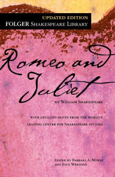

Shakespeare's Works
William Shakespeare is widely regarded as one of the greatest writers in the English language. He wrote 37 plays and 154 sonnets, as well as a number of other poems. His works have been translated into every major living language, and they continue to be performed and studied all over the world.
Shakespeare's plays are divided into three categories: comedies, tragedies, and histories. His comedies are known for their wit, humor, and complex characters, and they often feature love stories and mistaken identities. Some of his most famous comedies include "A Midsummer Night's Dream," "As You Like It," and "The Taming of the Shrew."
Shakespeare's tragedies are characterized by their dark themes and tragic endings. These plays explore universal human experiences such as love, jealousy, betrayal, and the consequences of ambition. Some of his most famous tragedies include "Hamlet," "Macbeth," and "Romeo and Juliet."
Shakespeare's histories are based on real events and people, and they explore the political and social events of the past. Some of his most famous histories include "Henry V," "Richard III," and "King John."
In addition to his plays, Shakespeare also wrote a number of poems, including 154 sonnets. His sonnets are known for their beauty and their exploration of themes such as love, aging, and the passage of time.
Overall, Shakespeare's works are known for their universal themes, complex characters, and beautiful language, and they remain some of the most well-loved and influential works of literature in the world.
Hamlet
Hamlet is a play written by William Shakespeare that tells the story of Prince Hamlet of Denmark and his quest for revenge against his uncle, Claudius, who has murdered Hamlet's father and taken the throne. The play is set in Denmark and is one of Shakespeare's most famous tragedies.
One of the main themes of Hamlet is the corrupting influence of power. Claudius, the new king of Denmark, is a manipulative and deceitful character who will stop at nothing to hold onto his power, even if it means committing murder. In contrast, Hamlet is a moral and intelligent character who struggles with the decision of whether or not to take action against Claudius.
Another key theme in Hamlet is the idea of appearance versus reality. Claudius is able to convince the other characters in the play that he is a just and fair ruler, even though he has committed a heinous act. Similarly, Hamlet puts on an act of madness in order to hide his true intentions and to throw Claudius off guard.
One of the most famous lines from the play is "To be or not to be," which comes from a soliloquy delivered by Hamlet as he contemplates suicide. This line has become synonymous with the play and has been quoted and referenced countless times in literature and popular culture.
Overall, Hamlet is a compelling and thought-provoking play that explores themes of power, morality, and the complexities of the human psyche. It is a must-read for anyone interested in Shakespeare's works or in classic literature in general.
Twelfth Night
Twelfth Night is a comedy written by William Shakespeare that tells the story of a young woman named Viola, who is shipwrecked on the coast of Illyria and disguises herself as a man in order to secure employment with the Duke Orsino. The play is filled with mistaken identities, love triangles, and comedic misunderstandings.
One of the main themes of Twelfth Night is the idea of gender roles and the performative nature of identity. Viola's decision to disguise herself as a man allows her to experience life in a way that would have been impossible as a woman. This gives her a unique perspective and allows her to challenge traditional gender roles.
Another key theme in the play is the idea of love and its various forms. The Duke is infatuated with Olivia, who is uninterested in him, and Viola is in love with the Duke, but he does not know her true identity. Meanwhile, Olivia falls in love with Viola, who is pretending to be a man. The play explores the different ways in which people experience and express love, and it suggests that love is often unpredictable and can lead to complications.
Twelfth Night is a delightful and light-hearted comedy that is filled with clever wordplay and humorous characters. It is a perfect example of Shakespeare's ability to blend comedy and depth, and it remains one of his most beloved and enduring works.

Romeo and Juliet
Romeo and Juliet is a tragedy written by William Shakespeare that tells the story of two young lovers from feuding families who are unable to be together due to the intense hatred between their families. The play is set in Renaissance-era Italy and is one of Shakespeare's most famous and well-loved works.
One of the main themes of Romeo and Juliet is the destructive power of hatred and the importance of forgiveness. The hatred between the Capulet and Montague families is the root cause of the conflict in the play, and it ultimately leads to the deaths of Romeo and Juliet. The play suggests that hatred can have far-reaching and devastating consequences, and that it is important to find ways to reconcile and move past conflict.
Another key theme in the play is the idea of love and its power to transcend social and cultural barriers. Romeo and Juliet's love for each other is strong enough to overcome the hatred between their families and the societal expectations placed on them. The play suggests that true love is a force that can bring people together and help them overcome seemingly insurmountable obstacles.
Romeo and Juliet is a timeless and poignant love story that explores the complex and powerful emotions of love, hatred, and forgiveness. It is a must-read for anyone interested in Shakespeare's works or in classic literature in general.
